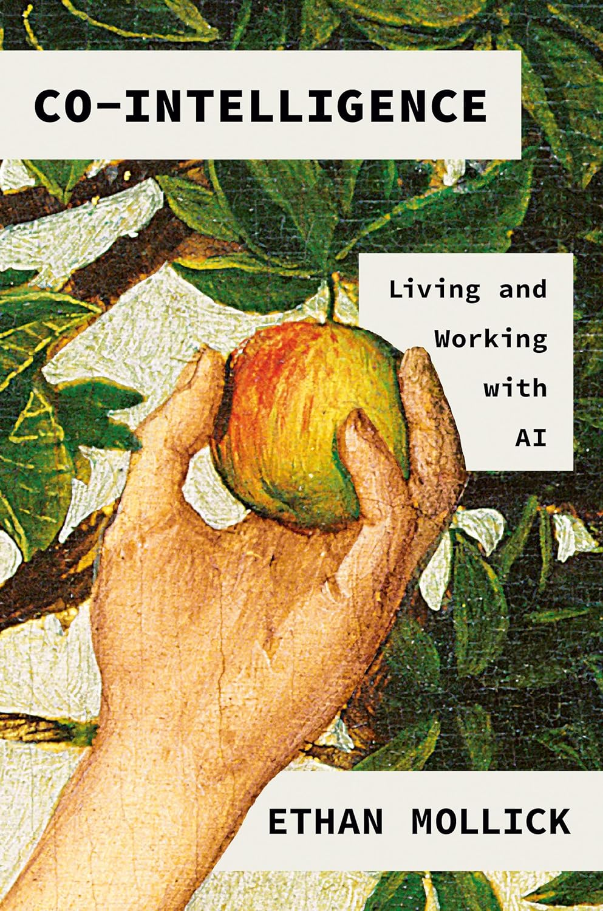

"Co-Intelligence: Living and Working with AI"
- Read on 2025-07-26
- Rating: ️️️️️
- Format: üéß (4 hours 39 minutes)
This was a really quick read. If you're unfamiliar with AI, it's likely worth the read/listen. I listened to it entirely in one morning while on a bike ride and then doing some chores at home.
I've used AI more in the past two months than I have in the past two decades combined. I can't help but think about the usefulness of this tool. I agree with the author, Ethan Mollick, wholeheartedly that the most productive use of AI involves the combination or blending of AI and humans. He shares examples of Centaurs and Cyborgs. The former distinguishes between which things should be worked on exclusively by the human versus the computer, whereas the latter incorporates the computer into one's otherwise human tasks.
He makes a suggestion, which I had previously started to implement, and will continue to do so, as I learn more about AI, its limits and its place in life: "Always invite AI to the table". It can do some things really well, and struggles with other things. In some ways it makes me more productive, and in other places, it struggles. Be the "human in the loop" - when AI suggestions something, use your knowledge and experience to provide feedback and move onward. Know that the current AI you use is the worst AI you will ever use, since it's only going to get better.
The author mentions the concern from the 1970s that the introduction of the calculator would make us worse at math. Ultimately, calculators found a key place in our lives. Similarly, while I think we can become too dependent on calculators for basic math (like 2+2=4), we can also become overly dependent on AI. As an augmenter to our existing skills, creativity, and thought process, I think AI can ultimately be a great tool when used ethically, and within reason.
- Prior: Crazy Horse and Custer